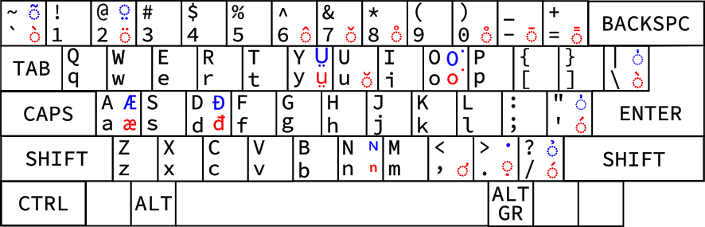

東南羅馬字鍵盤佈局
Keyboard Layout for Southeast Romanizations
這是什麼？
目前台語等語言所使用之羅馬字時常使用不包括在英文拉丁字母之內之附標，因此在輸入上有較多不便；本佈局將多種羅馬字所使用之附標集齊一處，以望解決此問題。
目前的佈局
其中紅色字符使用 AltGr 鍵（一般為右側 Alt 鍵）+ 對應鍵輸入（例如 ṳ 使用 AltGr + Y 輸入），藍色字符使用 Shift + AltGr + 對應鍵輸入。
何處可下載安裝？
請移步 GitHub Release 頁面。（注：目前僅支持 Windows）
我有建議！
若有建議，歡迎聯繫 Twitter @_SetsunaK 或者電郵 zingleon@protonmail.com。
附：東南諸羅馬字附標對照表
| 附標 Diacritics | 特殊字符 Special Characters | |||||||||||||
|---|---|---|---|---|---|---|---|---|---|---|---|---|---|---|
Acute |
Grave |
Circumflex |
Tilde |
Macron | Diaresis (Umlaut) | Vertical line | Overring | Breve | Underdot | Two underdots | Caron | |||
| 台語 Taiwanese 閩南語 Southern Min |
白話字 Pe̍h-ōe-jī |
有 | 有 | 有 | 無 | 有 | 無 | 有 | 無 | 有[3] | 無 | 無 | 無 | ⁿ ᴺ |
| 台羅 Tâi-lô |
有 | 有 | 有 | 無 | 有 | 無 | 有 | 無 | 無 | 無 | 無 | 無 | 無 | |
| 潮州話 Teochew |
白話字 Pe̍h-ūe-jī |
有 | 有 | 有 | 有 | 有 | 無 | 有 | 無 | 無 | 無 | 無 | 無 | ⁿ ᴺ |
| 客語 Hakka |
白話字 Pha̍k-fa-sṳ |
有 | 有 | 有 | 無 | 無 | 無 | 有 | 有 | 無 | 無 | 無 | 無 | ṳ |
| 閩東語 Eastern Min |
平話字 Bàng-uâ-cê |
有 | 有 | 有 | 無 | 有 | 無 | 無 | 無 | 有 | 無 | 有 | 無 | ṳ[4] |
| 海南話 Hainanese |
白話字 Bǽh-oe-tu |
有 | 有 | 有 | 無 | 有 | 無 | 無 | 無 | 無 | 無 | 無 | 無 | æ |
| 粵語 Cantonese |
耶魯 Yale |
有 | 有 | 無 | 無 | 有 | 無 | 無 | 無 | 無 | 無 | 無 | 無 | 無 |
| 傳教士式 | 有 | 有 | 有 | 無 | 無 | 無 | 無 | 無 | 無 | 無 | 無 | 有 | 無 | |
| 其他方案[5] | 有 | 有 | 有 | 有 | 無 | 有 | 無 | 無 | 無 | 無 | 無 | 無 | 無 | |
| 越南語[6] Vietnamese |
國語字 chữ Quốc ngữ |
有 | 有 | 無 | 有 | 無 | 無 | 無 | 無 | 無 | 有 | 無 | 無 | Đ đ Ơ ơ Ư ư[7] |
註：
- 本鍵盤佈局為解決特殊附標符號之輸入問題而設計，不需要使用附標符號之羅馬拼音方案（如粵拼）因此不在此列出。
- 一些實在小眾的羅馬字（如建寧羅馬字）未在上面列出，但本佈局亦支持所使用之附標。
- 在維基百科被列為
̍h之 variant。 - 除
ṳ外，使用 two underdots 之字母亦有a，e與o。 - 「其他方案」包括一些已有現存文本的小眾方案，如 Penkyamp。
- 越南語並非 sinitic language，支持只是順帶做的，並非本佈局之重點。
- 依靠 U+031B COMBINING HORN。